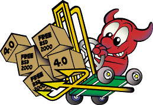

Информация о релизах
Релизы FreeBSD подразделяются на "продуктивные релизы" и "старые продуктивные релизы". Первый тип лучше всего подходит для пользователей, ищущих новые возможности; второй тип для пользователей, желающих придерживаться более консервативной стратегии обновления.
Релизы также подразделяются по длительности поддержки офицером информационной безопасности на "нормальные" и "расширенные".
Файлы документации для каждого релиза доступны для просмотра в формате HTML на странице документации к релизам.
Текущие поддерживаемые релизы
Полная информация по датам выхода, типу и ожидаемому времени жизни для поддерживаемых в настоящее время релизов находится в разделе Поддерживаемые релизы на странице Информационная безопасность FreeBSD.
Последние релизы
Продуктивные релизы
Релиз 11.1 (Январь 2014) Анонс : Информация о релизе : Замечания по установке : Информация об аппаратной совместимости : Readme : Исправления и дополнения
Старые продуктивные релизы
Релиз 10.3 (Сентябрь 2013) Анонс : Информация о релизе : Замечания по установке : Информация об аппаратной совместимости : Readme : Исправления и дополнения
Релиз 10.2 (Июнь 2013) Анонс : Информация о релизе : Замечания по установке : Информация об аппаратной совместимости : Readme : Исправления и дополнения
Будущие релизы
Для получения расписания выпуска будущих релизов, а также более полной информации о процессе их подготовки, пожалуйста, посетите страницу Подготовка релизов.
Доступны также и последние снэпшоты из веток FreeBSD-STABLE и FreeBSD-CURRENT. Подробная информация находится на страничке Получение FreeBSD.
Предыдущие релизы с поддержкой
- 9.1 (Декабрь 2012) Анонс: Информация о релизе: Замечания по установке : Информация об аппаратной совместимости: Readme: Исправления и дополнения
- 8.3 (Апрель 2012) Анонс: Информация о релизе: Замечания по установке : Информация об аппаратной совместимости: Readme: Исправления и дополнения
Предыдущие релизы, достигшие окончания срока жизни
Полная историческая информация по датам выхода, типу и эффективному времени жизни для этих релизов находится в разделе Неподдерживаемые релизы на странице Информационная безопасность FreeBSD.
- 9.0 (Январь 2012) Анонс: Информация о релизе: Замечания по установке : Информация об аппаратной совместимости: Readme: Исправления и дополнения
- 8.2 (Февраль 2011) Анонс: Информация о релизе: Информация об аппаратной совместимости: Readme: Исправления и дополнения
- 8.1 (Июль 2010) Анонс: Информация о релизе: Информация об аппаратной совместимости: Readme: Исправления и дополнения
- 8.0 (Ноябрь 2009) Анонс: Информация о релизе: Информация об аппаратной совместимости: Readme: Исправления и дополнения
- 7.4 (Февраль 2011) Анонс: Информация о релизе: Информация об аппаратной совместимости: Readme: Исправления и дополнения
- 7.3 (Март 2010) Анонс: Информация о релизе: Информация об аппаратной совместимости: Readme: Исправления и дополнения
- 7.2 (Май 2009) Анонс: Информация о релизе: Информация об аппаратной совместимости: Readme: Исправления и дополнения
- 7.1 (Январь 2009) Анонс: Информация о релизе: Информация об аппаратной совместимости: Readme: Исправления и дополнения
- 7.0 (Февраль 2008) Анонс: Информация о релизе: Информация об аппаратной совместимости: Readme: Исправления и дополнения
- 6.4 (Ноябрь 2008) Анонс: Информация о релизе: Информация об аппаратной совместимости: Замечания по установке: Readme: Исправления и дополнения
- 6.3 (Январь 2008) Анонс: Информация о релизе: Информация об аппаратной совместимости: Замечания по установке: Readme: Исправления и дополнения
- 6.2 (Январь 2007) Анонс: Информация о релизе: Информация об аппаратной совместимости: Замечания по установке: Readme: Исправления и дополнения
- 6.1 (Май 2006) Анонс: Информация о релизе: Информация об аппаратной совместимости: Замечания по установке: Readme: Исправления и дополнения
- 6.0 (Ноябрь 2005) Анонс: Информация о релизе: Информация об аппаратной совместимости: Замечания по установке: Readme: Исправления и дополнения:
- 5.5 (Май 2006) Анонс: Информация о релизе: Информация об аппаратной совместимости: Замечания по установке: Readme: Исправления и дополнения:
- 5.4 (Май 2005) Анонс: Информация о релизе: Информация об аппаратной совместимости: Замечания по установке: Readme: Исправления и дополнения: Руководство по обновлению
- 5.3 (Ноябрь 2004) Анонс: Информация о релизе: Информация об аппаратной совместимости: Замечания по установке: Readme: Исправления и дополнения: Руководство по обновлению
- 5.2.1 (Февраль 2004) Анонс: Информация о релизе: Информация об аппаратной совместимости: Заметки по установке: Readme: Исправления и дополнения: Руководство для начинающих
- 5.2 (Январь 2004) Анонс: Информация о релизе: Информация об аппаратной совместимости: Заметки по установке: Readme: Исправления и дополнения: Руководство для начинающих
- 5.1 (Июнь 2003) Анонс: Информация о релизе: Информация об аппаратной совместимости: Заметки по установке: Readme: Исправления и дополнения: Руководство для начинающих
- 5.0 (Январь 2003) Анонс: Информация о релизе: Информация об аппаратной совместимости: Заметки по установке: Readme: Исправления и дополнения: Руководство для начинающих
- 4.11 (Январь 2004) Анонс: Информация о релизе: Информация об аппаратной совместимости: Заметки по установке: Readme: Исправления и дополнения
- 4.10 (Май 2004) Анонс: Информация о релизе: Информация об аппаратной совместимости: Заметки по установке: Readme: Исправления и дополнения
- 4.9 (Октябрь 2003) Анонс: Информация о релизе: Информация об аппаратной совместимости: Заметки по установке: Readme: Исправления и дополнения
- 4.8 (Апрель 2003) Анонс: Информация о релизе: Информация об аппаратной совместимости: Заметки по установке: Readme: Исправления и дополнения
- 4.7 (Октябрь 2002) Анонс: Информация о релизе: Информация об аппаратной совместимости: Заметки по установке: Readme: Исправления и дополнения
- 4.6.2 (Август 2002) Анонс: Информация о релизе: Информация об аппаратной совместимости: Readme: Исправления и дополнения
- 4.6 (Июнь 2002) Анонс: Информация о релизе: Информация об аппаратной совместимости: Заметки по установке: Исправления и дополнения
- 4.5 (Январь 2002) Анонс: Информация о релизе: Информация об аппаратной совместимости: Исправления и дополнения
- 4.4 (Сентябрь 2001) Анонс: Информация о релизе: Информация об аппаратной совместимости : Исправления и дополнения
- 4.3 (Апрель 2001) Анонс: Информация о релизе: Исправления и дополнения
- 4.2 (Ноябрь 2000) Анонс : Информация о релизе : Исправления и дополнения
- 4.1.1 (Сентябрь 2000) Анонс : Информация о релизе : Исправления и дополнения
- 4.1 (Июль 2000) Анонс : Информация о релизе : Исправления и дополнения
- 4.0 (Март 2000) Анонс : Информация о релизе : Исправления и дополнения
- 3.5 (Июнь 2000) Анонс : Информация о релизе : Исправления и дополнения
- 3.4 (Декабрь 1999) Анонс : Информация о релизе : Исправления и дополнения
- 3.3 (Сентябрь 1999) Анонс : Информация о релизе : Исправления и дополнения
- 3.2 (Май 1999) Анонс : Информация о релизе : Исправления и дополнения
- 3.1 (Февраль 1999) Анонс : Информация о релизе : Исправления и дополнения
- 3.0 (Октябрь 1998) Анонс : Информация о релизе : Исправления и дополнения
- 2.2.8 (Декабрь 1998) Анонс : Информация о релизе : Исправления и дополнения
- 2.2.7 (Июль 1998) Анонс : Информация о релизе : Исправления и дополнения
- 2.2.6 (Март 1998) Анонс : Информация о релизе : Исправления и дополнения
- 2.2.5 (Октябрь 1997) Анонс : Информация о релизе : Исправления и дополнения
- 2.2.2 (Май 1997) Информация о релизе : Исправления и дополнения
- 2.2.1 (Апрель 1997) Информация о релизе
- 2.2 (Март 1997) Анонс : Информация о релизе
- 2.1.7 (Февраль 1997) Анонс : Информация о релизе
- 2.1.6 (Декабрь 1996) Анонс : Информация о релизе
- 2.1.5 (Июль 1996) Анонс : Информация о релизе
- 2.1 (Ноябрь 1995) Анонс : Информация о релизе
- 2.0.5 (Июнь 1995) Анонс : Информация о релизе
- 2.0 (Ноябрь 1994) Анонс : Информация о релизе
- 1.1.5.1 (Июль 1994)
- 1.1.5 Информация о релизе
- 1.1 (Май 1994) Информация о релизе
- 1.0 (Ноябрь 1993)